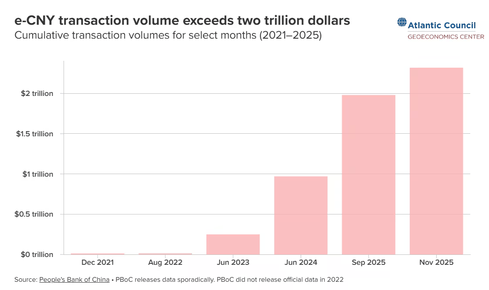
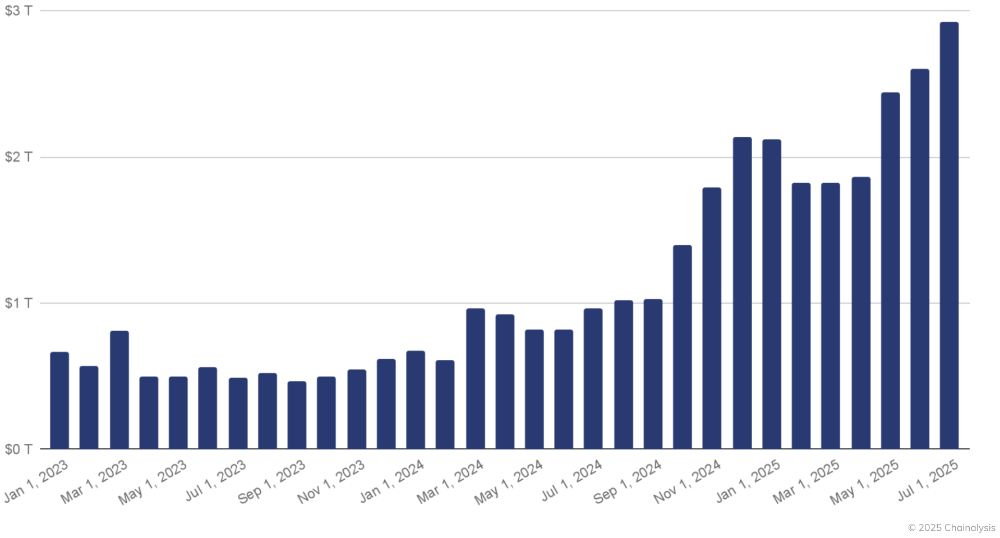
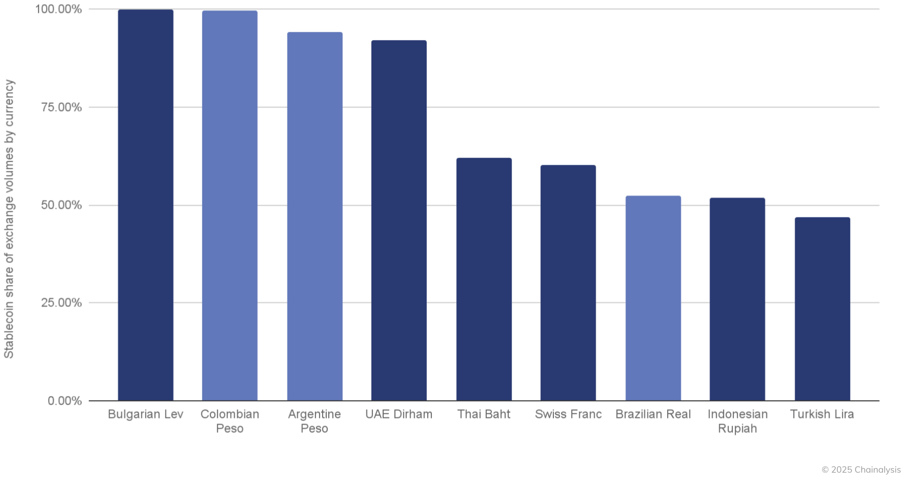

The GENIUS Act marks a watershed moment in American finance, further cementing the United States as the crypto capital of the world.
지니어스법은 미국 금융사의 중대한 전환점
Just as President Abraham Lincoln’s National Currency Act of 1863 established a national framework for bank-issued currency, the GENIUS Act establishes a federal framework for payment stablecoins in the digital age.
1863년 링컨 대통령 시절 제정된 국가통화법처럼, 디지털 시대 결제용 스테이블코인의 연방 제도 틀을 확립
The OCC’s final rule carries that landmark legislation forward, providing a clear, practical foundation for private-sector innovation, competition, and American leadership in digital assets.
통화감독청 최종 규정은 이 법을 실행에 옮기는 조치
| 1863 국가통화법 | 2025 GENIUS법 | |
|---|---|---|
| 발행 | 민간 은행 | 민간 발행자 |
| 기준 | 통화감독청(OCC) 신설 | 통화감독청(OCC) 등 |
| 담보 | 연방 국채 예치 | 현금·단기국채 1:1 |
| 숨은 목적? | 남북전쟁 자금조달 | 미중 경쟁 |


